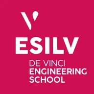
2023 – now · Paris
ESILV
Engineering degree, 4th year (Master 1) · Aerospace & Defense major
- Orbital mechanics, spacecraft propulsion, satellite communications, fluid mechanics
- Digital Sovereignty & Defense minor
Fourth-year aerospace and defense engineering student at ESILV, Paris. I am the Lead Software Engineer for STAR-D, a student experiment flying to 85 km on a REXUS 38 sounding rocket from Esrange, Sweden, in March 2027.

Space Test of Amoeba Response: Dictyostelium
STAR-D studies how microgravity affects phagocytosis in Dictyostelium amoebae. A microfluidic system handles the cells in flight while sensors and a camera record the experiment through the few minutes of weightlessness on a REXUS rocket.
I am responsible for the onboard segment: the software that runs on the experiment from power-on on the launch pad to recovery. It reads six sensors, records a camera, streams live telemetry to the ground station through the rocket's service module, and moves the experiment through its flight modes.
Acquisition, sequencing and logging, storage, telemetry and uplink handling.
Student Experiment Documentation written to ECSS standards and defended at each review.
The plot follows your scroll, and the code panel shows the flight software I wrote for each stage, with comments shortened. The trajectory is a simple model.
The interfaces my flight software drives, and the data flow I designed to run across them.
External entityProcessData store
The program follows the milestones of a real space project, each one in a different place.
The STAR-D experiment, integrated in its REXUS module. My contribution is the flight software and data-flow architecture that run it in flight.
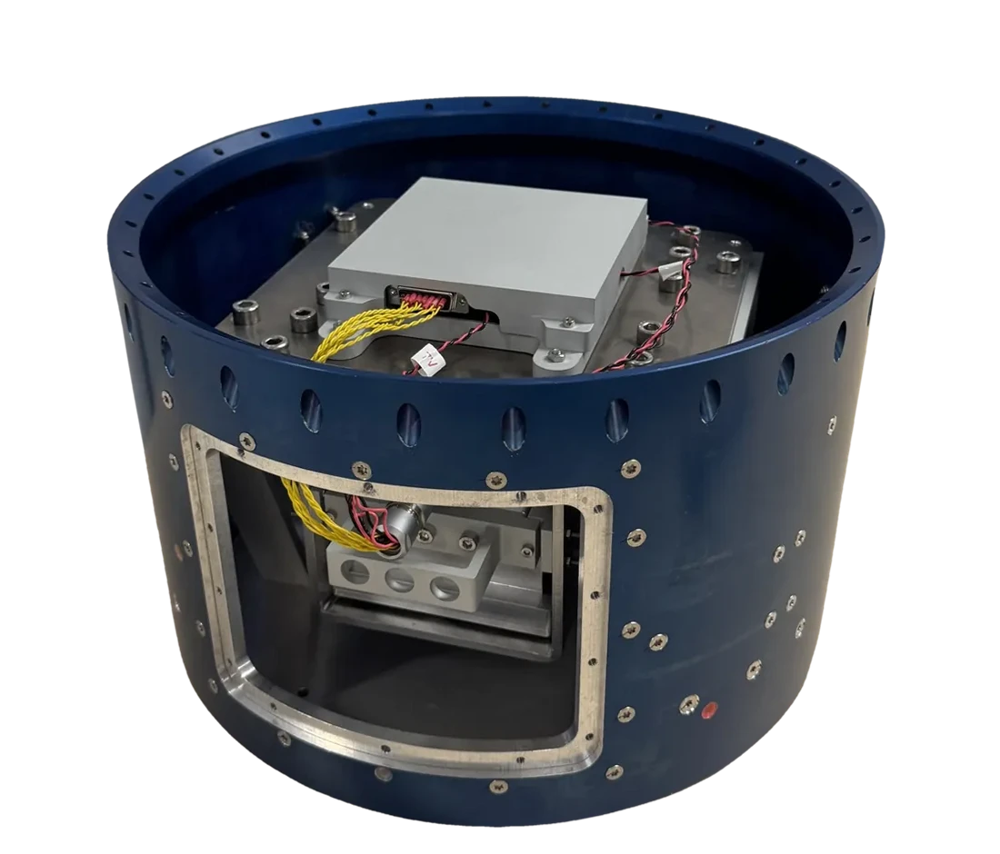
January 2026: aerospace engineering lectures, the PDR and a first week with the other Cycle 17 teams.
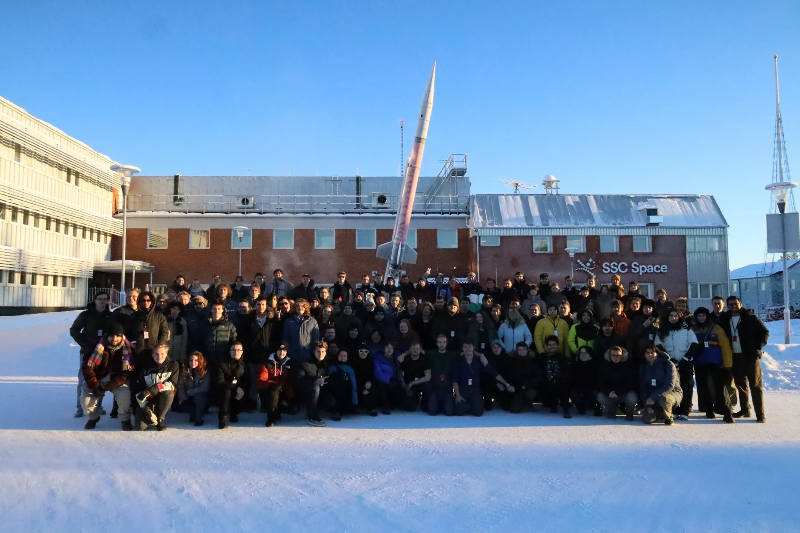
REXUS/BEXUS Cycle 17 teams at SSC Space during Training Week.
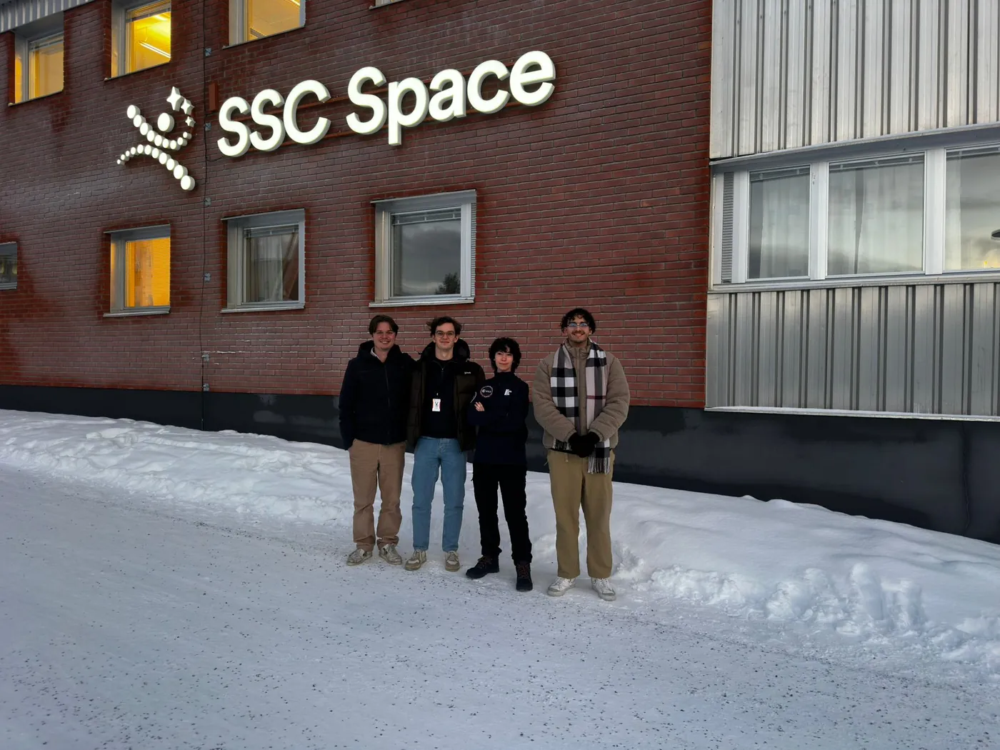
Part of the STAR-D team at SSC Space.
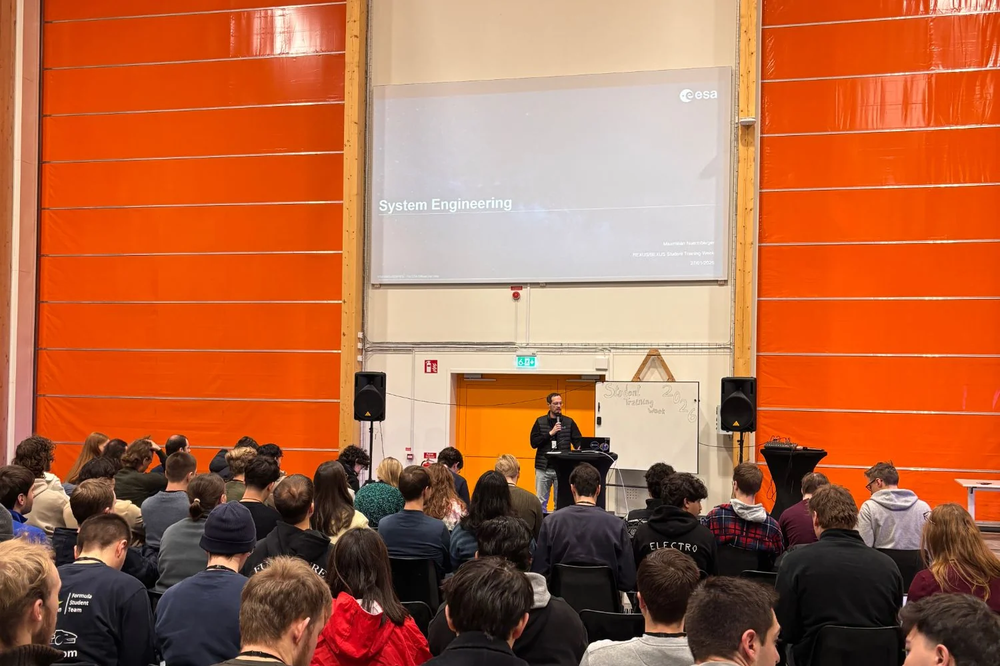
System Engineering course (Image: ESA credit)
Two experimental mini-rockets built with LéoFly, ESILV's student aerospace association, for C'Space, the launch campaign run by CNES and Planète Sciences. Both were qualified by CNES controllers and flew.
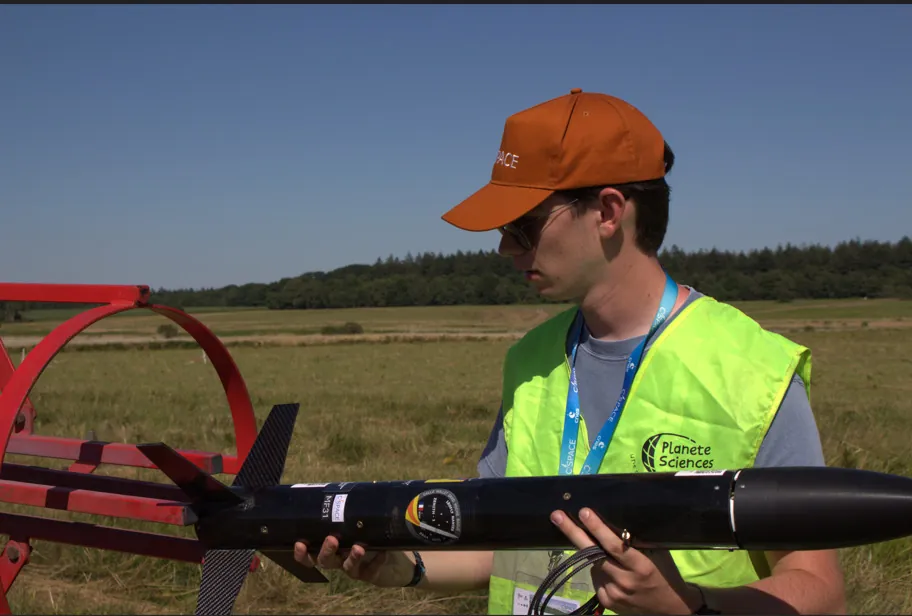
Designed the avionics rack in CAD: a compact frame that holds the electronics boards inside a thin-diameter airframe.

Technical supervisor. Led a team of 8 students from design to flight; nominal recovery after flight.
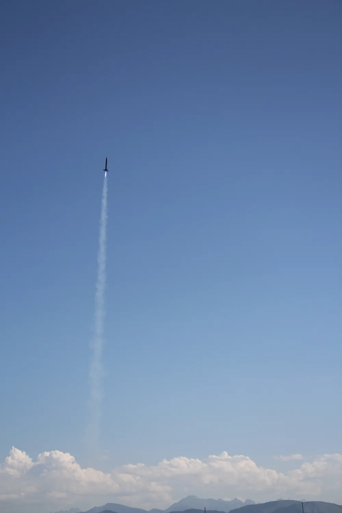
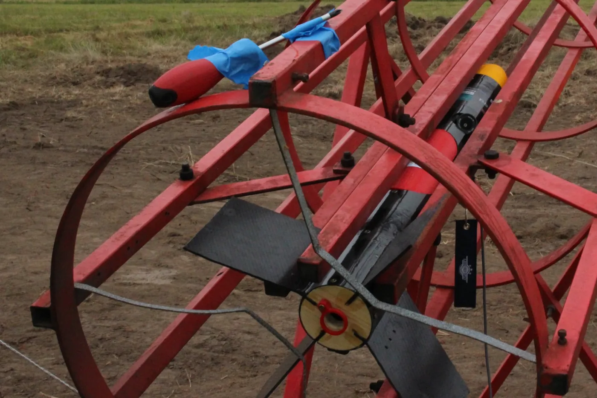
I sit on the board of the association that runs these projects.
An aerospace engineering degree in Paris, an exchange semester in Melbourne, and an international upbringing that included the UAE and Ghana.

Engineering degree, 4th year (Master 1) · Aerospace & Defense major
Exchange semester
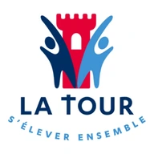
Institut de La Tour, Paris · Baccalauréat with highest honours, seven years in the English section · 2016–2023

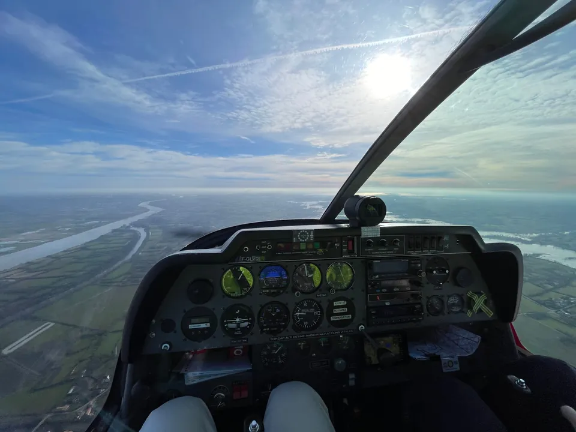
Initial training towards the Light Aircraft Pilot Licence (LAPL) at the Loire-Atlantique flying club, after the BIA, France's national aeronautics certificate.
Off the clock: DJing and collecting vinyl, golf, swimming.
I'm looking for a 4–5 month internship from April 2027 in flight software, avionics or space systems.